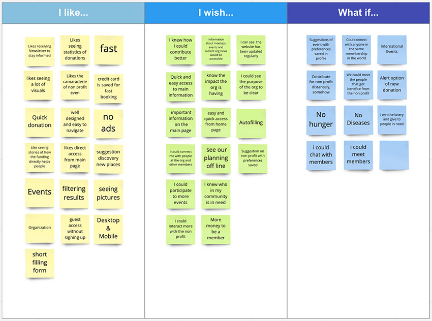
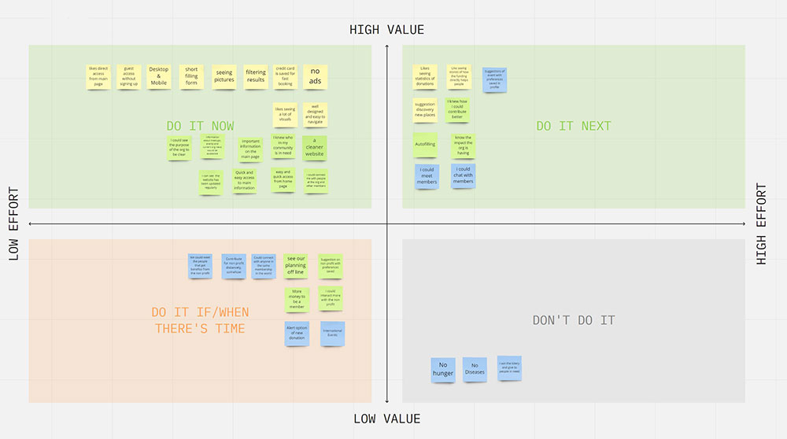
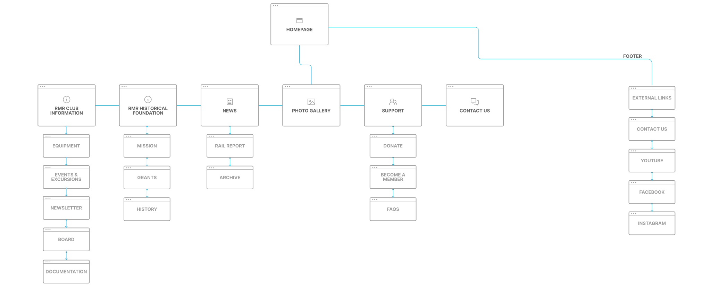
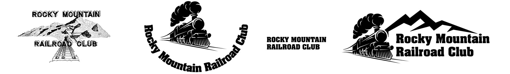

About the project
Problem
The Rocky Mountain Railroad club website is a relic of mid-90's design and had major IA issues. My team wanted to create a modern re-design concept that would give club members a better way to interact with the website and would attract new members into the club.
My Role
The team included 3 UX designers, with one that leaned more towards the research. The other designer and I worked collaboratively to come up with many of the UI patterns used across the site. We all were involved in the research and I took the lead on logo design, wireframing, prototyping, and finishing the design details.
Tools
- Figma
- Miro
- Adobe Photoshop
- Affinity Designer
- Trello
The Design Process
Through the Design Process, we were able empathize with the users and the stakeholders, define the user flows and key requirements, brainstorm new ideas, and prototype a new design.

Empathy
The Current Site
Globally, the website is outdated and unintuitive to use. Users have difficulty finding what they are looking for without knowing how the website is organized.
Many of the Heuristic Principles are not respected on the website. It is not minimalist and user has to scan the entire site to find what they're looking for.
{kind=link}
According to the information we gathered from user Interviews & tests, we improved:
- The home page now has quick access to the most visited pages that will reduce searching. User will have more of what they need in front of themdirectly on the home page.
- The menu is intuitive and easy to use.
- The site includes more visuals - Images, cards and less pure text
- Using Card-sorting, we achieved a much better information architecture (IA) which makes navigating the site much easier.
Since this project needed a complete redesign, abandoning basically everything from the current site, it had both a ton of room for a creative solution and the challenge of coming up with something from nothing.
Personas
Proto Persona

The internet can be hard to use for Steve, as he did not grow up using this technology. In order to stay up to date with his favorite hobby, he needs to be able to more easily interact with the RMRF website.
How might we redesign the Rocky Mountain railroad foundation website so that members like Steve can better find the information they are seeking.
User Persona

Definition
Problem Statement
During our research, user interviews, and through a survey, we discovered that having a well designed and easily navigable website was important to John when looking for a nonprofit. He wants to be able to get involved and stay up to date with his favorite nonprofit club. He needs to be able to easily interact with the website. He wants to join the Rocky Mountain Railroad Club because he enjoys Colorado and Railroad history and wants to get involved with an organization working to preserve both. He is overwhelmed by the current website being cluttered and not intuitive to have access to the information he needs.
We believe that users like John will be more inclined to donate or become a member if the website was easier to navigate and included more information fitting his needs. We might be able to help by redesigning the website in a cleaner and easier way for people like John.
{kind=link}
User Flow

Ideation
Priorities
- Connecting with the other club members and board
- Knowing the impact the organization is making
- Event suggestions
- No ads
- Responsive
- Short joining form
- Lots of visuals
- Important information on the homepage
- Website is update to date
Brainstorming
{kind=link}
Priority Matrix
{kind=link}
Site Map
Through card-sorting, we determined the best architecture for the navigation and pages, then created a sitemap that was easy to understand.
{kind=link}
Prototyping
Wireframing

I tend to think digitally and wireframing in Figma is easier than drawing up designs on paper.
We lo-fi wireframed the majority of the site and made a clickable prototype, which made moving into hi-fi very easy.
Logo Design & Branding
The original logo was quite aged, so I set out to design one that met the aesthetic of the new brand while simply and effectively broadcasting the club’s purpose. The first idea didn't incorporate enough of colorado in it, and the shape of the logo made it difficult to fit in header bars. The final design worked much better in the website design.
{kind=link}
Final UI Design
Play with the Prototype
- This is a Figma prototype. Not everything is clickable (but most things are).
- If you click on something that’s not a link, it will flash blue on the things that are clickable.
- The keyboard is not typeable. You can click on the search bar to progress forward
- Press the letter 'R' on your keyboard to start from the beginning.
Final Thoughts
This was a fun project to work on, but it had its challenges. We had some problems figuring out how to find potential users of the site for user research and tests, so much of our research was done more on a broader scale about non-profits in general. Had we had more time, we would have liked to work with the client and the club members more.
We didn't hear back from stakeholders until pretty far into the process, so their input drove the direction of the redesign less than it could have. We did interview the club president, who gave us some great insight into the club and how they use their website. We would have liked to see how the members would like to use their site as well.
Had we had more time for the project we would have liked to implement everything we could from our interviewees wants. A lot of our interviewees stressed the need for transparency when giving money to a non-profit. Had we had more time, we would have loved to figure out how to make their financials more public in an easy to digest manner.
Overall, we're really pleased with how our redesign came out and are excited to show it to the stakeholders. It would be interesting if they implementented any or all of our designs. Their president said they are aware they need to update their website, so it could be a great opportunity for them.